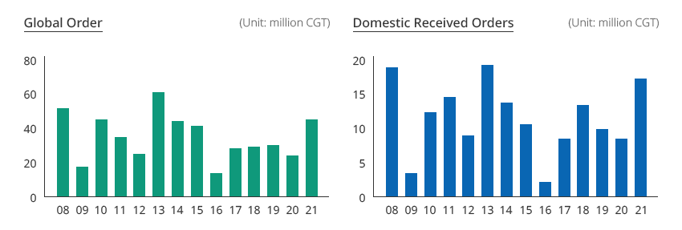
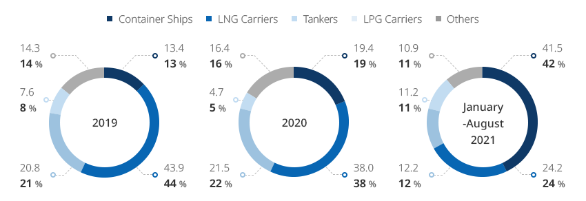
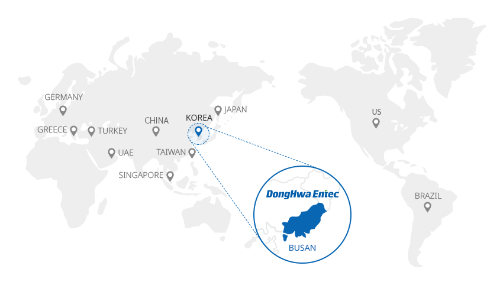
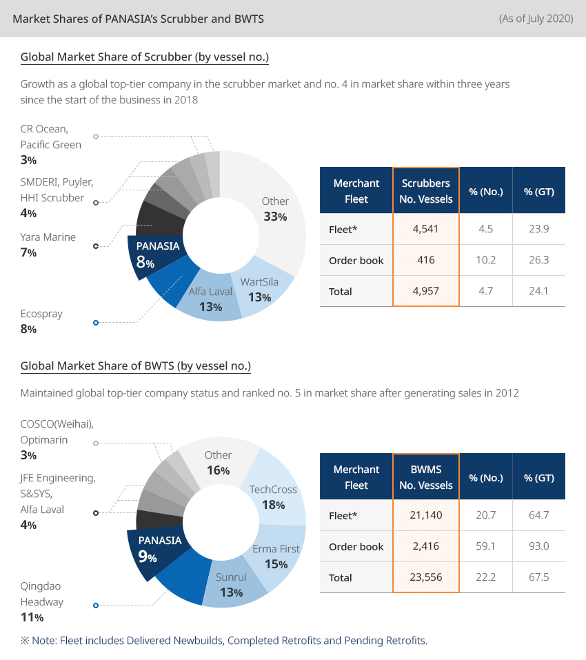
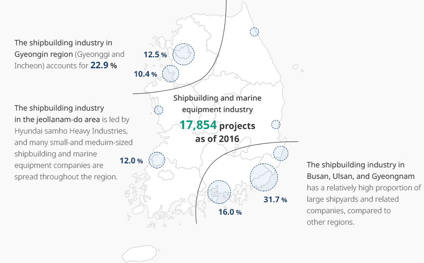
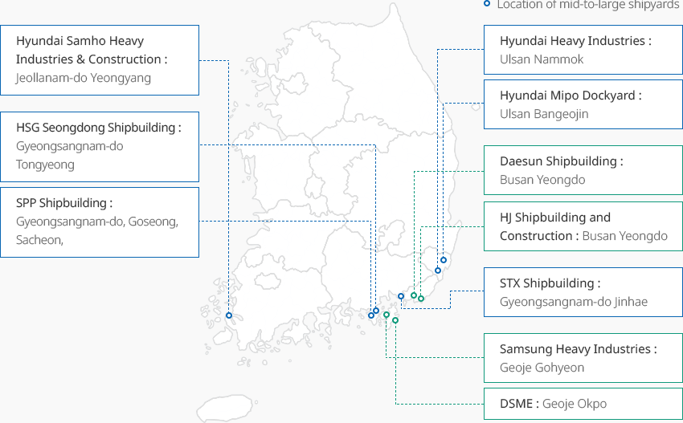

Shipbuilding and Marine
- Home
- Why KOREA
- Industry
- Shipbuilding and Marine
Shipbuilding and Marine
-
Global Competitiveness of Korea’s Shipbuilding and Marine Industries CloseGlobal Competitiveness of Korea’s Shipbuilding and Marine IndustriesThe International Maritime Organization (IMO) has been continuously strengthening environmental regulations. As the standards for reducing air pollutants and greenhouse gases are being strengthened, existing ship propellant fuels are now being replaced with clean fuels.
With the energy paradigm shift and the emergence of smart ships, the global shipbuilding and equipment industry has advanced the technology development for ships based on low-carbon or non-carbon fuel. The development of ICT also contributes to making ships smarter.Accordingly, Korean shipbuilders and equipment manufacturers have already developed industrial products and technologies focusing on high added values, eco-friendliness, and smartness in order to acquire global competitiveness.The number of orders received by domestic shipyards that have acquired technological competitiveness for high value-added/eco-friendly ships reached the highest level in eight years. Ship orders in 2021 reached 17.44 million CGT, an increase of 112% compared to the same period in 2020. Such order performance is the highest in eight years since 2013 (18.44 million CGT)."Global Orders and Domestic Shipyard Received Order Volume"Global Order (Unit: million CGT)Domestic Received Orders (Unit: million CGT) ※ Note: Annual basis (January 2 for 2022)
※ Note: Annual basis (January 2 for 2022)
※ Source: Clarksons -
Domestic Shipyard Received Orders Highest Increase Since 2008 OpenDomestic Shipyard Orders, Mark Highest Increase Since 2008The ranking of orders received by domestic ship type can be broken down into container ships, LNG carriers, and tankers. Container ships accounted for the highest rate (41.5%, as of January-August 2021), due to strong global container ship orders caused by a surge in sea freight and an increase in global cargo volume.
LNG carriers are in second place, accounting for 24.2%. This is because Korea has an overwhelming share of received orders based on its high technological competitiveness, and orders for LNG carriers have increased worldwide after the strengthening of marine environment regulations by the IMO."Orders Received and Increases in Korea by Ship Type"(Unit: CGT)Orders Received and Increases in Korea by Ship Type Ship Type, Year Ship Type 2019 2020 January-August 2021 Ratio Increase Ratio Increase Ratio Increase Container ships 13.4 -43.4 19.4 44.9 41.5 114.0 LNG carriers 43.9 -1.0 38.0 -13.4 24.2 -36.4 Tankers 20.8 20.9 21.5 3.7 12.2 -43.3 LPG carriers 7.6 216.0 4.7 -38.6 11.2 138.4 Others 14.3 15.3 16.4 14.4 10.9 -33.4
Orders Received and Increases in Korea by Ship Type Ship Type, Year Ship Type 2019 2020 January-August 2021 Ratio Increase Ratio Increase Ratio Increase Container ships 13.4 -43.4 19.4 44.9 41.5 114.0 LNG carriers 43.9 -1.0 38.0 -13.4 24.2 -36.4 Tankers 20.8 20.9 21.5 3.7 12.2 -43.3 LPG carriers 7.6 216.0 4.7 -38.6 11.2 138.4 Others 14.3 15.3 16.4 14.4 10.9 -33.4 ※ Note: Year-on-year increase compared to the same period
※ Source: Clarksons -
Global Companies Enter Korea OpenGlobal CompaniesEnter KoreaDonghwa Entec positioned as a world-class company with thermal energy exchange technologyDonghwa Entech, founded in 1980, started its business by repairing heat exchangers for ships. The company now supplies the best products in the field of heat exchangers for ships and has established itself as a company specializing in heat exchangers. This mid-sized shipbuilding equipment and materials company boasts world-class technologies specialized in cryogenic heat exchangers as well as LNG carriers, gas-fueled ships, and LNG-FSRUs.Donghwa Entech has invested heavily in establishing research centers of a fairly large scale that cannot be seen in other mid-sized companies with an aim to secure independent technologies in the energy and environment fields. The company developed and supplied the Cold Box, which is a key material for Korea Gas Corporation’s Korean Single Mixed Refrigerant (KSMR) Demonstration Facility, which started trial operation in August 2021. The facility is currently undergoing trial operation.

 PANASIA ranks 4th in the world for eco-friendly sulfur oxide scrubberPANASIA is a global eco-friendly energy facility company engaged in water quality, air environment, and renewable energy supply facilities.
PANASIA ranks 4th in the world for eco-friendly sulfur oxide scrubberPANASIA is a global eco-friendly energy facility company engaged in water quality, air environment, and renewable energy supply facilities.
PANASIA’s main product in the beginning was the tank level and draft gauge system (TLGS), but the company developed the ballast water management system (BWTS) in 2004. It was reborn as an eco-friendly ship parts manufacturer.
GloEn-Patrol, PANASIA’s BWTS, uses a 100% physical treatment method, filter filtration, and UV sterilization technology. It is recognized as the safest, most eco-friendly and safe device.PANASIA also developed Korea’s first eco-friendly sulfur oxide reduction device for ships in preparation for the enactment of IMO 2020, which limits the sulfur content for ships to protect the air environment.
The company holds 250 domestic and foreign patents, and the sulfur oxide reduction device developed with domestic technologies is ranked first in the world market share. PANASIA has grown into a company with three overseas subsidiaries in Japan, China, and the Netherlands and 43 overseas networks, fully ready to enter the global market.Market Shares of PANASIA’s Scrubber and BWTS (As of July 2020)Global Market Share of Scrubber (by vessel no.)Growth as a global top-tier company in the scrubber market and no. 4 in market share within three years since the start of the business in 2018
- PANASIA - 8%
- Other - 33%
- WartSila - 13%
- Alfa Laval - 13%
- Ecospray - 8%
- Yara Marine - 7%
- Yara Marine - 7%
- CR Ocean, Pacific Green - 3%
Global Market Share of Scrubber Merchant Fleet Scrubbers No. Vessels %(No.) %(GT) Fleet* 4,541 4.5 23.9 Orderbook 416 10.2 26.3 Total 4,957 4.7 24.1 Global Market Share of BWTS (by vessel no.)Maintained global top-tier company status and ranked no. 5 in market share after generating sales in 2012
- PANASIA - 9%
- TechCross - 18%
- Other - 16%
- Erma First - 15%
- Sunrui - 13%
- Qingdao Headway - 11%
- Qingdao Headway - 11%
- COSCO(Weihai), Optimarin - 3%
Global Market Share of BWTS Merchant Fleet Scrubbers No. Vessels %(No.) %(GT) Fleet* 21,140 20.7 64.7 Orderbook 2,416 59.1 93.0 Total 23,556 22.2 67.5 ※ Note: Fleet includes Delivered Newbuilds, Completed Retrofits and Pending Retrofits.
-
Rebound of Shipbuilding and Equipment Industry Expected to Again Lead the Shipbuilding Economy OpenRebound of Shipbuilding and Equipment Industry Expected to Lead the Shipbuilding Economy AgainThe rapid slowdown of the Korean economy after the global financial crisis is attributable to a slump in the shipbuilding and equipment industry, one of the largest major industries. The average contribution to regional economic growth by the shipbuilding and equipment industry (the largest major industry) in the southeastern region reached 0.9%p between 2001 and 2008, but recorded negative growth (-0.4%p) between 2011 and 2019, indicating that it did not contribute to growth.However, as the shipbuilding industry experiences an opportunity for recovery, it is having a positive impact on the improvement of downstream industries, such as steel, chemicals, and metals, in addition to direct ripple effects, such as employment and added value creation. As the government announced an active support policy, the recovery speed of the shipbuilding and equipment industry is also accelerating. The government has recently announced the K-Shipbuilding Rebound Strategies to keep Korea’s status as a global shipbuilding powerhouse and is actively supporting the industry.As the global environmental regulations on the shipping sector have been strengthened recently, a paradigm shift from conventional fossil fuel based shipping to low-carbon fuel-based shipping is expected.
The government, judging that such a paradigm shift will determine the future market landscape, enacted the Act on Promotion of Development and Distribution of Environment-friendly Motor Vehicles (abbr. Eco-Friendly Vessel Act) (December 2018) and is in the process of implementing the act (January 2020).
The Korean Greenship-K Distribution Implementation Plan (2020-30), a basic plan for preparing mid- to long-term strategies, has been established to encourage the development and distribution of eco-friendly ships."K-Shipbuilding Rebound Strategies"K-Shipbuilding Rebound Strategies Name, Strategies Name Strategies K-Shipbuilding Rebound Strategies1)
(‘21.9)- Secure production capacity that matches the competitiveness of winning orders
- Lead eco-friendly and smart shipbuilding
- Strengthen the competitiveness of the shipbuilding industry ecosystem
※ Note: 1) Nurture 8,000 shipbuilders by 2022, increase productivity by 30% by 2030, become no. 1 eco-friendly and autonomous shipping market in the world, build a healthy shipbuilding ecosystem
※ Source: Ministry of Trade, Industry and Energy. Press release (April 4, 2021) -
Domestic Shipbuilding and Marine Equipment Location and Information OpenDomestic Shipbuilding and Marine Equipment Location and InformationShipbuilding and offshore businesses are mainly located in the southeast area (Busan, Ulsan, Gyeongnam) and the metropolitan areas.Approximately 78.2% of shipbuilding and marine equipment companies are distributed in the southeastern region, showing that this region is important for the shipbuilding industry. A cluster of the shipbuilding and equipment industry has been formed, which makes it possible to establish an active network.Shipbuilding and marine equipment industry 17,854 projects as of 2016The shipbuilding industry in Gyeongin region (Gyeonggi and Incheon) accounts for 22.9%.The shipbuilding industry in the jeollanam-do area is led by Hyundai samho Heavy Industries, and many small-and meduim-sized shipbuilding and marine equipment companies are spread throughout the region.The shipbuilding industry in Busan, Ulsan, and Gyeongnam has a relatively high proportion of large shipyards and related companies, compared to other regions.
 ※ Source: Study on the Necessity of Creating a New Maritime City, KMI, January 2019
※ Source: Study on the Necessity of Creating a New Maritime City, KMI, January 2019
※ Data also provided by: Korea Maritime and Ocean University"Location of Mid-to-Large Shipyards in Korea"Most of Korea's mid-to-large shipyards are located in the Gyeongsang region, only Hyundai Samho Heavy Industries and Construction is located in Jeollanam-do.Location of mid-to-large shipyards- Hyundai Heavy Industries: Ulsan Nammok
- Hyundai Mipo Dockyard: Ulsan Bangeojin
- Daesun Shipbuilding: Busan Yeongdo
- HJ Shipbuilding and Construction: Busan Yeongdo
- STX Shipbuilding: Gyeongsangnam-do Jinhae
- Samsung Heavy Industries: Geoje Gohyeon
- DSME: Geoje Okpo
- HSG Seongdong Shipbuilding: Gyeongsangnam-do Tongyeong
- SPP Shipbuilding: Gyeongsangnam-do, Goseong, Sacheon,
- Hyundai Samho Heavy Industries & Construction: Jeollanam-do Yeongyang
"Shipbuilding and Marine Equipment Companies by Region (mostly concentrated in Busan, Ulsan, and Gyeongnam)"Shipbuilding and Marine Equipment Companies by Region Region, Number of Companies, Ratio(%), Number of Employees, Sales (KRW million) Region Number of Companies Ratio(%) Number of Employees Ratio(%) Sales (KRW million) Ratio(%) Busan 346 57.38 19,185 51.57 7,904,104 51.3 Ulsan 65 10.78 2,845 7.65 929,859 6.03 Gyeongsangnam-do 143 23.71 10,512 28.26 4,332,419 28.11 Metropolitan Area 26 4.3 2,216 5.95 931,999 6.05 Others 23 3.83 2,444 6.57 1,312,219 8.51 Total 603 100 37,202 100 15,410,600 100 ※ Source: Export-Import Bank of Korea (Rep. Seo Byung-soo, National Assembly Report, February 23, 2021)


Invest KOREA
Recommendation on Locations
Industrial complex information
[Gyeongsangnam-do Geoje City] Hannae Shipbuilding Specialized Agricultural
Industrial Complex
Click [Go to Detailed Information] to go to the relevant information screen of
Smart K-Factory service of Industrial Complex Corporation.
-
Complex nameHannae Shipbuilding Specialized Agricultural Industrial Complex
-
Initial designation date2007.08.13
-
Designated area(m2)277,868
-
ManagementGyeongsangnam-do Geoje City
-
Nearby RailwayBusan Station
-
Distance from station(km)59
-
Nearby AirportGimhae International Airport
-
Distance from airport(km)57
-
Industrial water Supply capacity(ton/day)-
-
Affiliation local governmentGyeongsangnam-do Geoje City
-
Population246,402
Industrial complex information
[Gyeongsangnam-do Tongyeong City] Anjeong National Industrial
Complex
Click [Go to Detailed Information] to go to the relevant information screen of
Smart K-Factory service of Industrial Complex Corporation.
-
Complex nameAnjeong National Industrial Complex
-
Initial designation date1974.04.01
-
Designated area(m2)3,866,224
-
ManagementKorea Industrial Complex Corporation
-
Nearby RailwayJinju Station
-
Distance from station(km)46
-
Nearby AirportSacheon Airport
-
Distance from airport(km)45
-
Industrial water Supply capacity(ton/day)6500(㎥/day)
-
Affiliation local governmentGyeongsangnam-do Tongyeong City
-
Population129,226
Industrial complex information
[Jeollanam-do Mokpo City] Daeyang General Industrial Complex
Click [Go to Detailed Information] to go to the relevant information screen of
Smart K-Factory service of Industrial Complex Corporation.
-
Complex nameDaeyang General Industrial Complex
-
Initial designation date2009.02.05
-
Designated area(m2)1,545,007
-
ManagementJeollanam-do Mokpo City
-
Nearby RailwayMokpo Station
-
Distance from station(km)6
-
Nearby AirportMuan International Airport
-
Distance from airport(km)34
-
Industrial water Supply capacity(ton/day)5,138(㎥/day)
-
Affiliation local governmentJeollanam-do Mokpo City
-
Population226,875
Industrial complex information
[Gyeongsangnam-do Changwon City] Jinbuk Agricultural Industrial
Complex
Click [Go to Detailed Information] to go to the relevant information screen of
Smart K-Factory service of Industrial Complex Corporation.
-
Complex nameJinbuk Agricultural Industrial Complex
-
Initial designation date1989.12.15
-
Designated area(m2)133,170
-
ManagementGyeongsangnam-do Changwon City
-
Nearby RailwayMasan Station
-
Distance from station(km)22
-
Nearby AirportSacheon Airport
-
Distance from airport(km)51
-
Industrial water Supply capacity(ton/day)330(㎥/day)
-
Affiliation local governmentGyeongsangnam-do Changwon City
-
Population1,038,677
Industrial complex information
[Jeollanam-do Suncheon City] Haeryong Industrial Complex (Gwangyang Bay Area
Free Economic Zone)
Click [Go to Detailed Information] to go to the relevant information screen of
Smart K-Factory service of Industrial Complex Corporation.
-
Complex nameHaeryong Industrial Complex (Gwangyang Bay Area Free Economic Zone)
-
Initial designation date1998.04.22
-
Designated area(m2)1,592,808
-
ManagementJeollanam-do Suncheon City, Gwangyang bay area Free Economic Zone Authority
-
Nearby RailwayYulchon Station
-
Distance from station(km)5
-
Nearby AirportYeosu Airport
-
Distance from airport(km)11
-
Industrial water Supply capacity(ton/day)4,614(㎥/day)
-
Affiliation local governmentJeollanam-do Suncheon City
-
Population281,999
Industrial complex information
[Gyeongsangnam-do Geoje City] Obi 2nd General Industrial Complex
Click [Go to Detailed Information] to go to the relevant information screen of
Smart K-Factory service of Industrial Complex Corporation.
-
Complex nameObi 2nd General Industrial Complex
-
Initial designation date2014.09.05
-
Designated area(m2)108,613
-
ManagementGyeongsangnam-do Geoje City
-
Nearby RailwayJinhae Station
-
Distance from station(km)65
-
Nearby AirportGimhae International Airport
-
Distance from airport(km)63
-
Industrial water Supply capacity(ton/day)64(㎥/day)
-
Affiliation local governmentGyeongsangnam-do Geoje City
-
Population246,402